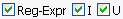

Click on them! If highlighted (colored according to your system theme), it means they are selected.
The Picker tab is used to select which files or folders will be renamed.
To select or deselect items:
Click on them! If highlighted (colored according to your system theme), it means they are selected.
Use the Browse button to open a folder select window.
Use the OK button if you pasted or typed in a directory.
Either way, the contents of the directory will be displayed in the
selection area.

Filtering allows you to only show those items that are of interest to you,
making selecting what you need easier.
Only items containing text entered in the Filter text box will be shown. To look
for file types use a '.', ie '.jpg' will display only jpeg image files.
The != (not equals) is a negative modifier, in other words if this is
checked only those items NOT containing the Filter will be shown.

You may also filter by regular expression.

Having Folders checked displays whatever sub-folders are in the folder you selected.
Having Files checked displays whatever files are in the folder you selected.
Checking Walk will select all the files in all the subdirectories. So if you select
the root of a drive (like C:\), all files in that drive will be displayed! However you will
not be able to rename folders at all.

Rather than sit there and select all or none items individually, I'll give you
these two nifty buttons.